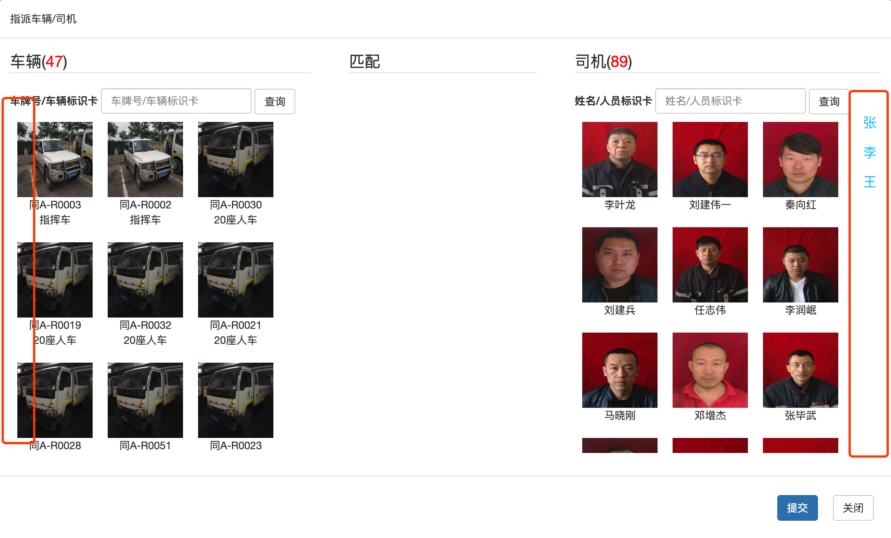

服务端
增加功能
计算车辆状态的功能部署到塔山服务器
采用AB TEST的方式
测试账户可以看到”车辆状态”饼状图
普通账户可以看到”候车站”饼状图
首页地图实现空车/重车切换功能 （丹平）空车按钮筛选
车辆图标区分车辆状态
修改地图全屏时按钮布局 (丹平)
提交出勤时增加按姓名排序
系统增加时间统计
用车申请时间
预计用车时间
预计结束时间
申请审批时间（通过、拒绝）
调度下发时间
车队指派车队时间（指派、拒绝）
司机接单时间
司机拒绝时间
司机到达用车单位时间
司机开始执行任务时间
司机完成任务时间
司机返回车队时间
增加威龙/塔通指派车辆姓氏序号筛选功能
每组10个按钮
车辆增加序号筛选按钮，全部、其他和10个数一组，
司机增加姓名筛选按钮，全部、其他和姓氏（数量从多到少排列）

| 工作组 | 人员 | 姓氏 | 大于2人的姓氏 | 大于2人的姓氏总人数 | 大于1人的姓氏 | 大于1人的姓氏总人数 |
|---|---|---|---|---|---|---|
| 威龙1组 | 93 | 44 | 8 | 50 | 15 | 64 |
| 威龙2组 | 91 | 41 | 8 | 51 | 15 | 65 |
| 威龙3组 | 98 | 52 | 6 | 42 | 16 | 62 |
| 塔通1组 | 22 | 14 | 1 | 4 | 6 | 14 |
| 塔通2组 | 22 | 14 | 2 | 8 | 4 | 12 |
| 塔通3组 | 22 | 18 | 0 | 0 | 4 | 8 |
客户端更新后台
支持多APP管理发布
支持是否强制更新
计划长期任务
WEBRTC技术评估（尽量多看一下相关东西）
* 第一步先做到可以跑起来一个DEMO
* 语音一对多通话
* 语音点对点通话
* 视频通话
* 视频通话中关闭视频界面
客户端
用车申请客户端
发布用车申请客户端（花雷 周一）
客户端使用统计 （左俊）
统计当前正在使用的手机型号
统计当前正在使用的系统分布
统计当前正在使用的APP版本分布
统计系统功能使用习惯
WIFI统计客户端
后台退出后，一直显示上传提示（左俊）
WIFI客户端加入视频功能（左俊）
车载终端
车载平板静默安装 （左俊）
WEBRTC技术优化（花雷）
* 语音一对多通话
* 语音点对点通话
* 视频通话
* 视频通话中关闭视频界面